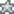
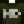

Goldmakrele
Zur Navigation springen
Zur Suche springen


| Goldmakrele | ||||||||||||||||||||||||||||||||||
| Ein wilder Fleischfresser, mit brillanten, orangenen Schuppen. | ||||||||||||||||||||||||||||||||||
| Information
| ||||||||||||||||||||||||||||||||||
| Fundort | Waldfluss | |||||||||||||||||||||||||||||||||
| Tageszeit | 6:00-19:00 | |||||||||||||||||||||||||||||||||
| Jahreszeit | ||||||||||||||||||||||||||||||||||
| Wetter | Beliebig | |||||||||||||||||||||||||||||||||
| Schwierigkeit | 78 | |||||||||||||||||||||||||||||||||
| Bewegung | Gemischt | |||||||||||||||||||||||||||||||||
| Größe (cm) | 61–84
| |||||||||||||||||||||||||||||||||
| Fischen EP | 29  32 | |||||||||||||||||||||||||||||||||
| Energie / Gesundheit |
| |||||||||||||||||||||||||||||||||
| ||||||||||||||||||||||||||||||||||
| ||||||||||||||||||||||||||||||||||
Die Goldmakrele ist ein Fisch der im  Sommer im Waldfluss gefangen werden kann.
Sommer im Waldfluss gefangen werden kann.
Karte
Die Goldmakrele ist im Waldfluss zu finden.
Als Geschenk
| Reaktionen der Dorfbewohner
| |
|---|---|
| Neutral | |
| Gefällt nicht | |
| Hasst es | |
Bündel
Sie wird für keine Bündel verwendet.
Rezepte
| Bild | Name | Beschreibung | Zutaten | Energie / Gesundheit | Rezeptquelle | Verkaufspreis | |||
|---|---|---|---|---|---|---|---|---|---|
| Maki-Rolle | Fisch und Reis, in Seetang gewickelt. |
|
|||||||
| Qualitätsdünger | Verbessert die Qualität des Bodens, was die Chance auf höherwertige Produkte steigert. In das bestellte Feld mischen. | N/A | |||||||
| Sashimi | Roher Fisch in dünne Scheiben geschnitten. |
|
Schneiderei
Goldmakrele kann in der Spule der Nähmaschine genutzt werden, um das färbbare Fisch Hemd herzustellen. 
Aufträge
Sie wird für keine Aufträge benötigt.
Geschichte
- 1.4: Iridiumqualität hinzugefügt. Kann jetzt für die Schneiderei benutzt werden.